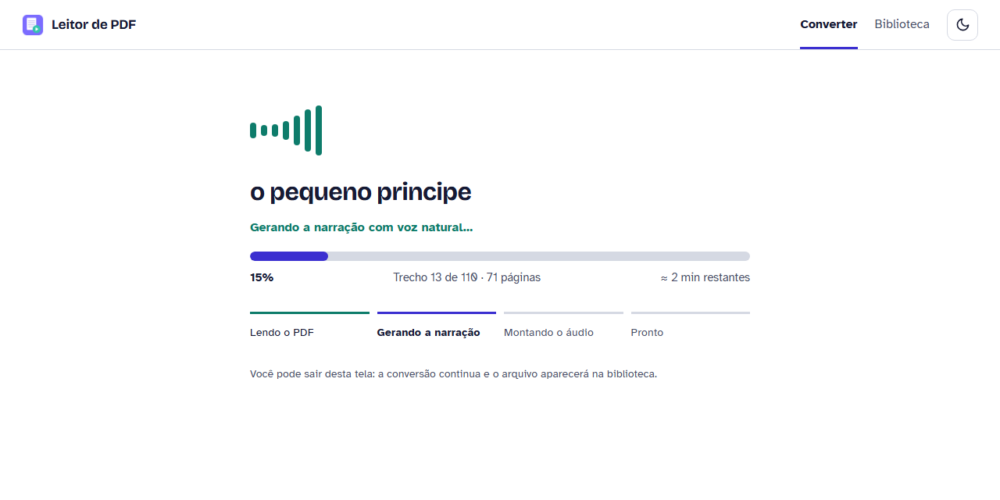
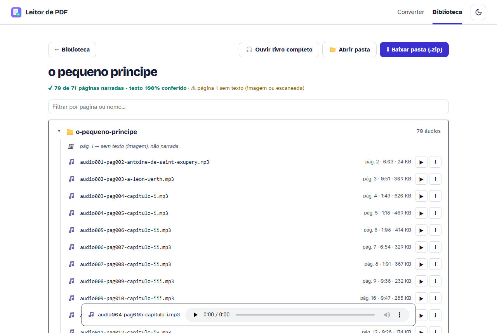

Conheça as telas
Do envio do PDF até a sua biblioteca de audiolivros.





Arraste o PDF, escolha a voz e ouça uma amostra antes de converter.
Arraste o arquivo, escolha a voz e o Leitor de PDF narra o livro inteiro, página por página, com voz natural em português.
Também disponível para Linux, ou use no navegador sem baixar nada.
O mesmo leitor em três formatos. As versões para computador geram os arquivos MP3; a versão web lê na hora, sem instalar.
Windows 10 e 11, 36 MB
Ubuntu, Debian, Mint, Fedora e outras distribuições, 40 MB
Use o .deb no Ubuntu, Debian, Mint e Pop!_OS, o .rpm no Fedora, e o .flatpak em qualquer outra distribuição. Veja como instalar.
Qualquer navegador atual, inclusive no celular
Usa as vozes do navegador. No Microsoft Edge, são as mesmas vozes naturais. Não gera MP3.
O que acontece por trás de cada conversão, para o áudio sair completo e agradável de ouvir.
Do envio do PDF até a sua biblioteca de audiolivros.


Arraste o PDF, escolha a voz e ouça uma amostra antes de converter.
Escolha o seu sistema e siga os passos. Em poucos minutos você já está ouvindo.
sudo apt install ./leitor-pdf_amd64.debsudo dnf install ./leitor-pdf.x86_64.rpmsudo apt install flatpak gnome-software-plugin-flatpak
flatpak remote-add --if-not-exists flathub https://dl.flathub.org/repo/flathub.flatpakrepoflatpak install --user leitor-pdf.flatpakflatpak run io.github.valnasio.LeitorPDFSem computador por perto? Use a versão no navegador, que funciona até no celular e não precisa instalar nada.
Como um script de poucas linhas virou um aplicativo que qualquer pessoa consegue usar.
O projeto começou há cerca de 4 anos como um script simples, feito à mão e inspirado por um vídeo do canal Hashtag Programação. Ele funcionava, mas travou num problema que eu não consegui resolver na época: PDFs grandes. Com a chegada das ferramentas de IA, voltei a ele para destravar o que tinha ficado pendente.
| Versão originalFeita à mão, há cerca de 4 anos | Versão atualReconstruída com apoio de IA | |
|---|---|---|
| PDFs grandes | Cortes fixos que quebravam palavras | Divisão só entre frases, em livros de milhares de páginas |
| Voz | Robotizada (gTTS) | Vozes neurais naturais |
| Resultado | MP3 soltos, sem nome | Um áudio por página, numa pasta com o nome dos capítulos, e o livro completo |
| Conferência | Nenhuma | Cada trecho conferido palavra por palavra |
| Como usar | Editar o código e rodar no terminal | Dois cliques, com biblioteca e player |
Não encontrou o que procurava? Abra uma pergunta no GitHub.
O aplicativo para Windows e Linux gera um MP3 por página e o livro completo, com vozes neurais, para ouvir sem internet e levar para o celular. A versão no navegador lê o PDF em voz alta na hora, usando as vozes que o navegador oferece. No Microsoft Edge, essas vozes são as mesmas vozes naturais. Ela não gera MP3.
Use o .deb no Ubuntu, Debian, Mint e Pop!_OS, o .rpm no Fedora, e o .flatpak em qualquer outra distribuição. Em todos os casos é baixar e dar dois cliques. O passo a passo completo, com os comandos para o terminal, está em Como instalar.
Sim. Esse aviso aparece em programas que não têm assinatura digital paga. Clique em Mais informações e depois em Executar assim mesmo. O código-fonte completo está aberto no GitHub.
Só durante a conversão, porque as vozes neurais são geradas online. Depois de pronto, o áudio pode ser ouvido sem internet.
Cerca de 1 minuto para cada 15 a 20 minutos de áudio. Um livro de 70 páginas fica pronto em poucos minutos, e você pode continuar usando o programa enquanto isso.
Não. O programa foi feito para PDFs grandes: testamos documentos com mais de 2.000 páginas. Cada trecho é conferido, e se o serviço de voz falhar, a conversão pausa e continua de onde parou.
Ainda não. O PDF precisa ter texto selecionável. Páginas que são só imagem aparecem no relatório da conversão como "sem texto".
No Windows, em %LOCALAPPDATA%\LeitorPDF. No Linux, em ~/.local/share/LeitorPDF. Na versão no navegador, no próprio navegador. Pelo aplicativo, você também pode abrir a pasta de cada livro ou baixá-la em .zip.